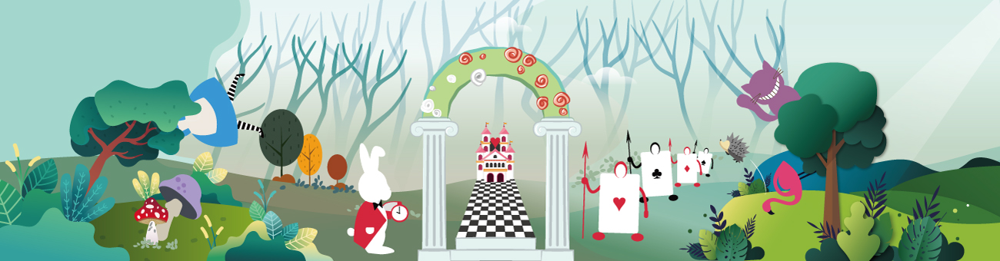
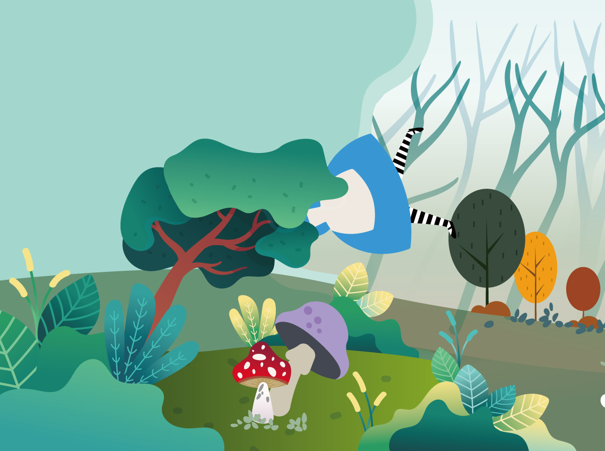
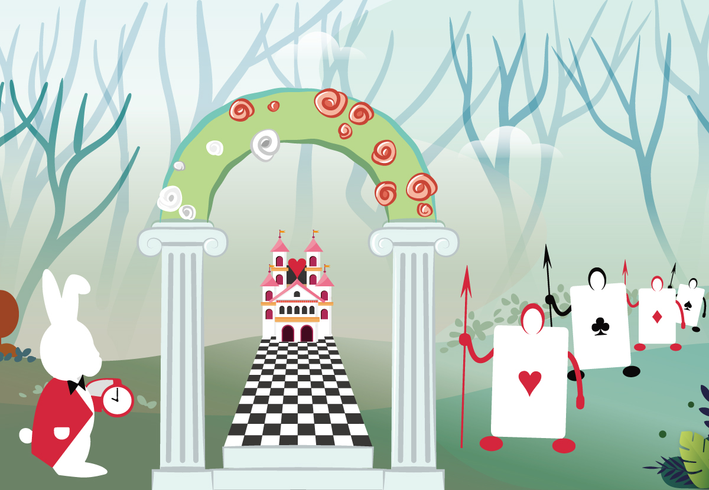
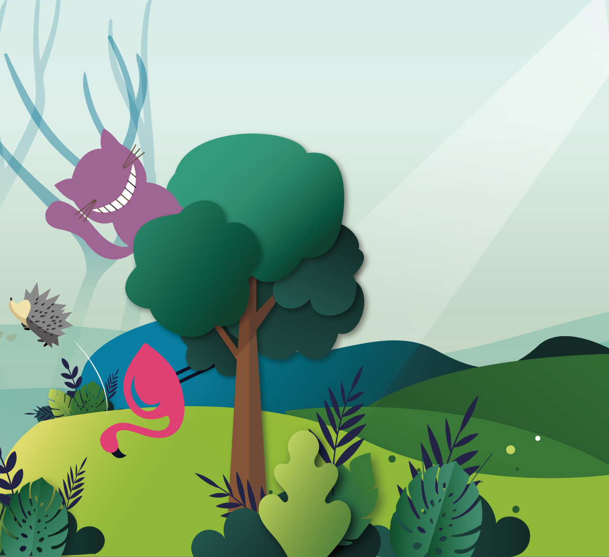
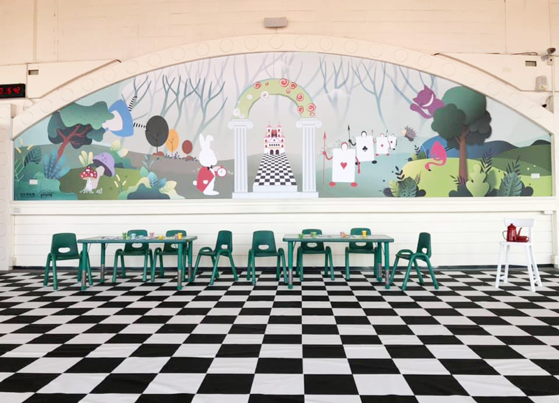
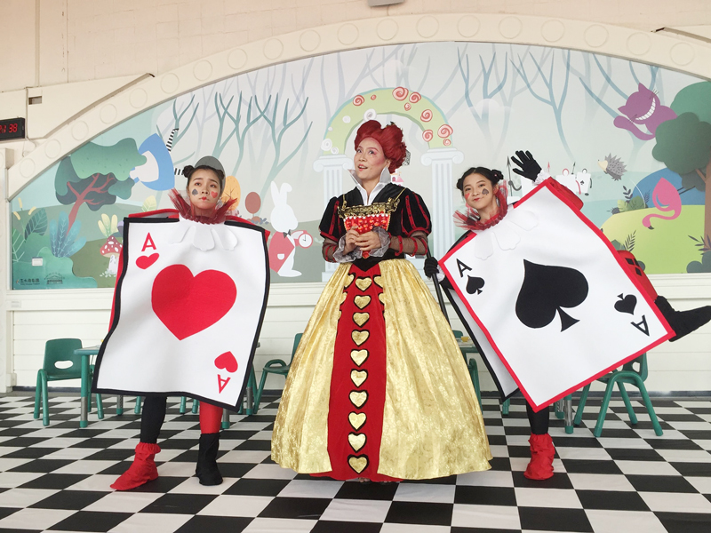

The Queen of Hearts' Afternoon Tea Date
Scenic Design
Everyone knows the story of Alice in Wonderland, but how much do you know about the Queen of Hearts?
This design task was to create the scenic design for a stage show for the Corny Chicken Theatre. The scenic design is a part of the play, the audience can touch it and play some games by it.This kind of performance way is "Immersive Experience", actors will have more interactivity with the audience, everyone is a part of the stage show. In the process of communicating with the team of theatre, I had a different interpretation of this classic story, also let me enjoy the whole process of drawing this illustration.
-
"Corny Chicken Theatre" is the first professional theatre from the National Taiwan University Theatre. It was created in 2003, dedicated to the production of imaginative comedy.
The Chinese meaning of the theatre name "Corny Chicken" comes from the homonym of English "imagination" in mandarin. In addition to the extension of "imagination", it also represents the multilingualism and multicultural drama development attempt of the theatre in the long-term planning. The theatre hopes to break the audience's stereotypes of children's dramas and present the professional theatre aesthetics to the audience through stories full of childlike and profound meanings.